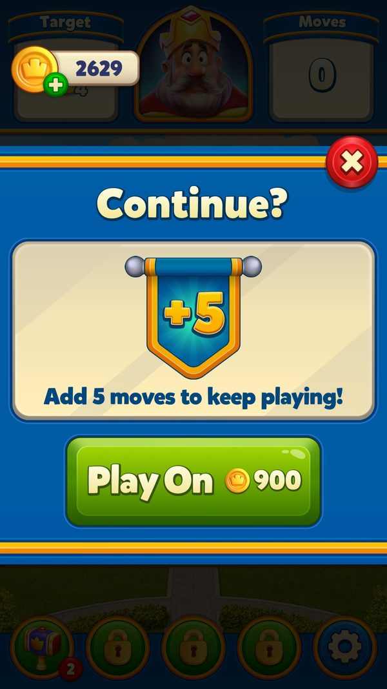
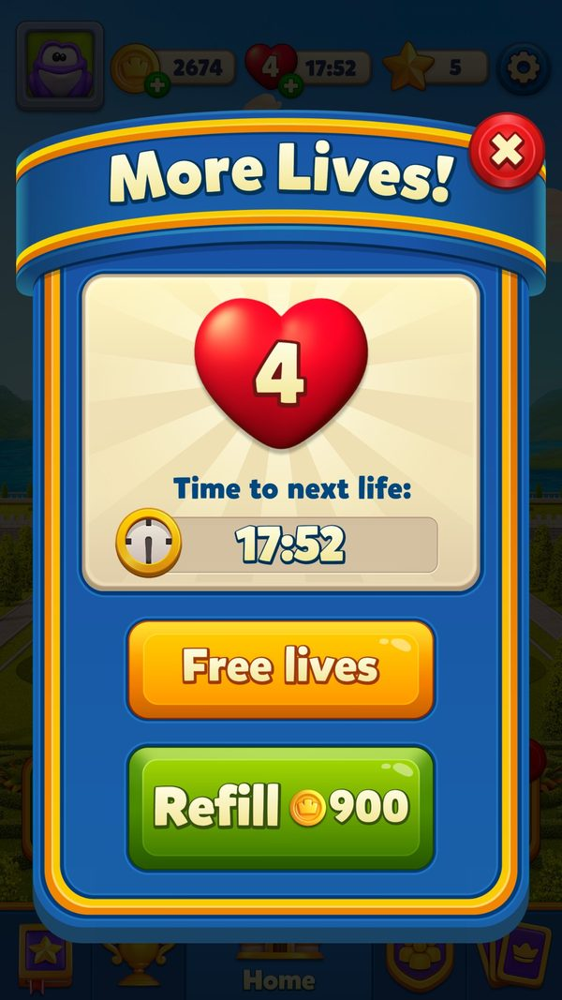
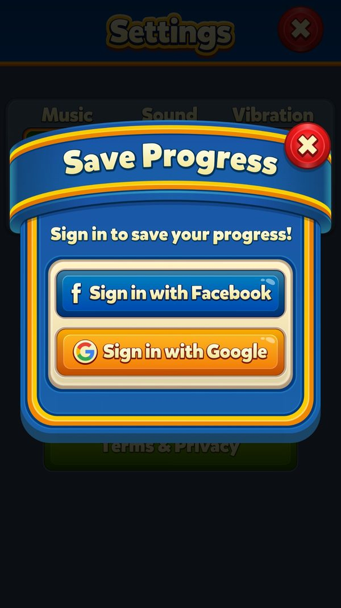

A/B test: chia nhóm, đọc nhóm và 52 thí nghiệm trên một tài khoản
Server chia nhóm và đẩy xuống ra sao, game đọc nhóm thế nào, thí nghiệm nào đụng tới giá, thưởng, độ khó, và làm sao tránh lệch nhóm.
Bài này đi theo 52 thí nghiệm mà server gán cho một tài khoản mới, xem từng nhóm làm game khác đi chỗ nào. Đọc khoảng 8 phút. Phần cộng nước theo nhóm SLB nói kỹ hơn ở liveops-difficulty-segmentation.
- ✅ Giá trị thật: lấy thẳng từ code, config server thật, save hoặc ảnh chụp khi chơi.
- 🧪 Ví dụ minh họa: con số đầu vào giả định để thấy cơ chế chạy; cách tính trong ví dụ là cách tính thật trong code.
- Tên kỹ thuật (class, method, key) để trong ngoặc hoặc ở dòng bằng chứng, để tra code khi cần.
Tóm tắt nhanh
- Nhóm do server chia, máy chỉ đọc. Dữ liệu là danh sách 'id thí nghiệm → số nhóm'. Tiêu chí chia nhóm nằm ở server (chưa đọc được).Ví dụ ✅ Ping 09/09 mang 52 cặp, ví dụ 129 → 4, 194 → 6, 226 → 5.
- Không có trong thí nghiệm = hành vi gốc. Hàm đọc nhóm trả 0 khi không thấy id, và 0 luôn nghĩa là 'tắt'.Ví dụ ✅ Ảnh chụp 06/10: Play On lần 1 giá 900 coin, +5 lượt. Tài khoản không có id 51/52 (ego_price_change) nên không vào bản 10 lượt.
- Mỗi thí nghiệm thường có hai id: người mới và người cũ. Nhóm 1 là đối chứng (suy luận: mọi hàm đều trả 'tắt' với nhóm 1), biến thể từ 2 tới 7.Ví dụ ✅ reward_reduction: 128 cho người mới, 129 cho người cũ; tài khoản ở 129 nhóm 4.
- Có thí nghiệm đụng thẳng vào kinh tế. Tài khoản test bị giảm thưởng màn khó, Supercharge giá 1900 coin, Daily Rewards biến thể 3.Ví dụ ✅ Level khó: 30 / 50 / 100 coin thay vì 100 / 150 / 200.
- Một số tính năng 'đóng băng' nhóm. Đổi nhóm giữa chừng không làm đổi trải nghiệm đang chạy.Ví dụ ✅ Nhóm SLB được giữ trong save (GameplayCommonUse2 bit 48–51 = 5); Pinata chụp nhóm butler vào tiến độ lúc sang đợt mới.
- AB nối với marketing và push. Link quảng cáo King's Workshop gán người cài vào thí nghiệm TableGame; 8 id được gắn vào hồ sơ push.Ví dụ ✅ NotificationTagRequiredKeys = 158, 159, 179, 180, 187, 188, 211, 212; trong đó 211/212 app không biết tên.
- Có thí nghiệm đã xong nhưng vẫn được gán. Hàm trả hằng số, server vẫn gửi nhóm.Ví dụ ✅ new_royal_league_v2 (141) nhóm 2, nhưng hàm IsNewRoyalLeagueAbEnabled luôn trả true.
Ví dụ xuyên suốt: tài khoản 2712389101 đi qua 52 thí nghiệm
✅ Tài khoản test, cài 08/09, level 8 ngày 09/09, level 11 ngày 06/10. Nhóm lấy từ PingResponse 09/09; hiệu lực tính bằng chính các hàm đọc nhóm trong code. Dòng 🧪 là giả định.
| Lúc | Chuyện gì xảy ra | Game làm gì | Kết quả |
|---|---|---|---|
| 08/09 16:13 | Cài game, Register | Nhận nhóm AB lần đầu; chưa có user_id nên giữ lại sự kiện AbTestEnter | ✅ AbTestEnter gửi sau khi có tài khoản |
| 09/09 20:46 | Ping | So 52 nhóm mới với nhóm cũ, không có id nào đổi | ✅ Không gửi AbTestEnter mới; UpdatedAbTestKeys rỗng |
| 09/09 20:46 | Lưu | Ghi 52 hàng vào save, in log 'User NewAbTest Data' | ✅ AbTestTableItem có 52 hàng |
| 09/09 | Tính nhóm SLB | Nhóm 226 = 5, không thuộc tập 2/3/4/6/7/8 | ✅ Không cộng nước; save giữ nhóm 5 |
| 06/10 | Thua level 11, hết lượt | Hỏi nhóm ego_price_change: không có → 0 → gói gốc | ✅ Ảnh: 'Add 5 moves', Play On 900 coin |
| 🧪 sau này | Lên level 112 (Hard), thắng | Hỏi reward_reduction: nhóm 4 → bật giảm thưởng màn khó | ✅ Cách tính thật: 30 coin khởi điểm thay vì 100 |
| 🧪 sau này | Mở offer Supercharge | Hỏi supercharge_ab: nhóm 6 | ✅ Giá 1900 coin (bảng CDN thật) |
| 🧪 giả định | Server gán thêm id 52 nhóm 3 | Hàm '10 lượt' (nhóm 3/4/5) bật | 🧪 Play On thành gói 10 lượt thay vì 5 (PriceChangeAbEgoMoveCount = 10) |
Cùng một màn chơi, hai người khác nhóm có thể thấy giá Play On, thưởng cuối màn và số nước khác nhau. Không có chỗ nào trong game nói cho người chơi biết điều đó.


Ảnh chụp minh họa (3)
Ảnh chụp từ game thật trên LDPlayer. Bấm ảnh để phóng to, phím ← → để chuyển ảnh.



Luồng hoạt động (11 bước)
Tóm lại: server chia nhóm → gửi danh sách id → nhóm → máy so với nhóm cũ → báo AbTestEnter khi đổi → lưu save → mỗi tính năng tự hỏi nhóm khi cần
- 1Server chia nhómServerServer quyết định thí nghiệm và nhóm cho từng người.Ví dụ ✅ 52 thí nghiệm cho một tài khoản level 8.
PingResponse_NewAbData.json (AllTests) - 2Nhận nhóm qua 5 lệnhClientRegister, Ping, sau mỗi ván, gán theo chiến dịch, và khi đổi tài khoản.Ví dụ ✅ Tài khoản test nhận ở Register (08/09) và Ping (09/09).
RegisterHttpCommand; PingHttpCommand.ProcessUserData; UpdateUserProgressHttpCommand; AssignCampaignABHttpCommand; LoginService - 3Tìm id đổi nhómClientMáy tự so bảng cũ và mới; ô UpdatedAbTestKeys server gửi không được dùng.Ví dụ ✅ Ping 09/09: không id nào đổi.
AbTestHelper.UpdateAbTestData / GetUpdatedAbTestKeys - 4Lưu và ghi logClientGhi bảng vào save; log dạng '[ Name/ID : x, Group : y ]'.Ví dụ ✅ 52 hàng trong AbTestTableItem.
AbTestHelper.ConvertAbTestData / LogAbTestData - 5Báo analyticsClientMỗi id đổi nhóm gửi AbTestEnter (id, nhóm). Lúc mới cài thì giữ lại tới khi có user_id.Ví dụ 🧪 Server đổi 194 từ nhóm 6 sang 3 → một AbTestEnter(194, 3).
AbTestHelper.SendAnalytics; AnalyticsManager.AbTestEnter / SaveAbTestEnter - 6Cập nhật hồ sơ pushClientTrạng thái các id trong NotificationTagRequiredKeys được gửi kèm tag push lần vào nền sau.Ví dụ ✅ 8 id, trong đó tài khoản có 159 (nhóm 4) và 179 (nhóm 5).
AbTestHelper.GetAbTestStatusesForNotificationTag; GameNotificationService.UpdateAbTestStatusesTag - 7Việc kèm theo khi id đặc biệt đổiClientId 201 → tải lại bundle, mở khoá lại event cho người mới; id quảng cáo → cấu hình lại quảng cáo; id thanh toán ngoài → cấu hình lại Xsolla.Ví dụ ✅ Id 201, 205/206, 220/221, 181/182, 222/223.
AbTestHelper.UpdateAbTestData - 8Tính năng hỏi nhómClientHàm đọc nhóm xét cả id người mới và id người cũ, so với tập nhóm được bật. 18 chỗ khác đọc thẳng bảng nhóm.Ví dụ ✅ Không có id 51/52 → Play On giữ 900 coin / 5 lượt.
AbTestHelper.Is* / Get* (GetValueOrDefault(..., 0)) - 9Đóng băng nhómClientSLB giữ nhóm cũ tới khi qua level 230 nếu người chơi đã gặp SLB; Daily Rewards và Pinata ghi nhóm vào tiến độ lúc bắt đầu.Ví dụ ✅ Save: GameplayCommonUse2 = 1407379178520576 → bit 48–51 = 5.
SuperBoosterManager.SetAbValues; PinataProgress.ResetProgressForNewEvent - 10Gán nhóm từ quảng cáoServerNgười cài từ link King's Workshop được gán vào thí nghiệm TableGame; chưa có tài khoản thì chờ và gửi kèm Register.Ví dụ ✅ Log mẫu: 'KingsWorkshop - sending campaign ab assignment for {0}. Source: {1}'.
AppsFlyerInitializer.TryEnableTableGameFromDeepLinkValue; AssignCampaignABHttpCommand - 11Người chơi thấy khác biệtPlayerGiá, thưởng, số nước, chấm đỏ đổi theo nhóm.Ví dụ ✅ Supercharge 1900 coin; màn khó 30 coin; chấm đỏ giảm.
RemainingMovesManager.GetInitialCoinAmount; super-charge-config.txt
Nhánh & ngoại lệ
| Khi | Thì | Ví dụ | Bằng chứng |
|---|---|---|---|
| Người chơi không trong thí nghiệm | Mọi hàm trả 'tắt', chạy bản gốc. | ✅ ego_price_change vắng → Play On 900 coin / 5 lượt. | AbTestHelper.Is* (mặc định 0) |
| Server gán id app cũ không biết | Vẫn lưu và log, không ai đọc: an toàn cho app cũ. | ✅ 29 id không tên trên tài khoản test. | ab_tests_runtime.json |
| Server đổi nhóm giữa chừng | Gửi AbTestEnter mới; tính năng đọc thẳng đổi ngay, tính năng đóng băng giữ nhóm cũ. | 🧪 Đổi 226 từ 5 sang 4 khi người chơi đang ở level 150 và đã gặp SLB → vẫn giữ nhóm 5 tới level 231. | SuperBoosterManager.SetAbValues |
| Mới cài, chưa có user_id | Giữ AbTestEnter lại, gửi sau. | ✅ Đúng như Register ngày 08/09. | AnalyticsManager.SaveAbTestEnter / SendSavedAbTestEnter |
| Đăng nhập Facebook và chuyển sang tài khoản cũ | Bảng nhóm thay hoàn toàn theo tài khoản đích.  | 🧪 Máy mới đăng nhập vào tài khoản đã chơi 2 năm → nhận đủ nhóm của tài khoản đó. | LoginService (SocialConnectResponse.NewAbData) |
| Gán nhóm theo chiến dịch bị lỗi | Giữ trạng thái chờ và thử lại; đã có nhóm thì bỏ qua. | ✅ Log mẫu: 'AssignCampaignAb package failed for {0}, campaign stays pending.' | AssignCampaignABHttpCommand.PackageFail |
| Thí nghiệm đã có kết luận | Hàm trả hằng số, nhóm server gửi bị bỏ qua. | ✅ IsNewRoyalLeagueAbEnabled = true; IsSuperDukeAbEnabled, IsMagicDukeEnabled = false. | AbTestHelper (hàm return hằng) |

Thí nghiệm của tài khoản test làm game khác đi chỗ nào
Tóm lại: 23 id có tên → 21 có code đọc → phần lớn đụng tới kinh tế và event
| Thí nghiệm (id, tên) | Nhóm | Hiệu lực trong game | Ví dụ |
|---|---|---|---|
| 129 reward_reduction_old_user | 4 | Thưởng coin cuối màn khó giảm; thưởng event giảm | ✅ Tới level 112 (Hard) thắng → 30 coin khởi điểm thay vì 100 |
| 194 supercharge_ab_old_user | 6 | Bật offer Supercharge, giá theo nhóm | ✅ Nhóm 6 → 1900 coin (bảng CDN: nhóm 2…7 = 4900 / 3900 / 3900 / 2900 / 1900 / 900) |
| 226 superlightball_level_change_v2_new_user | 5 | Không thuộc tập nhóm có bảng cộng nước (2, 3, 4, 6, 7, 8) | ✅ Level 114: nhóm này chơi bản gốc, +0 nước; save giữ nhóm 5 |
| 228 daily_rewards_new_user | 3 | Biến thể Daily Rewards 3, ghi vào tiến độ | ✅ Nhóm lưu ở bit 51–54 của tiến độ Daily Rewards |
| 161 x2_multiplier_token_v2_old_user | 2 | Biến thể token nhân đôi 2 | ✅ MultiplierTokenManager đọc nhóm 2 |
| 192 lightning_rush_propeller_rush_retry_old_user | 2 | Cho chơi lại Daily Lightning Rush / Propeller Rush | 🧪 Thua lượt đua → được vào lại thay vì chờ đợt sau |
| 200 weekday_offer_old_user | 4 | Dynamic offer được mở lại cho mua nhiều lần | ✅ Hàm 'mua nhiều lần' (nhóm 4) bật; hàm 'giảm giá thấp' (nhóm 3) tắt |
| 208 ladder_offer_shop_card_old_user | 1 | Nhóm đối chứng | ✅ Không có thẻ Ladder Offer trong Shop |
| 177 red_action_notification_new_user | 2 | Giảm chấm đỏ trên icon (không phải push) | ✅ 54 chỗ UI đổi cách hiện chấm đỏ |
| 159 robot_rivals_old_user | 4 | Bật Robot Rivals; trạng thái được gắn vào tag push | ✅ Nhóm 2/3/4 đều bật |
| 179 champions_clash_new_user | 5 | Không bật chơi lại Clash of Champions | ✅ Chỉ nhóm 2/3 mới chơi lại được |
| 189 merge_smith_new_user | 4 | Bật Merge Smith biến thể 4 | ✅ MergeSmithStepTask đọc nhóm 4 |
| 147 / 153 ancient_adventure (v1 / v2) | 5 / 3 | Bật chế độ Heist | ✅ Config Ancient Adventure bản 292 có mảng Heist ('hd') đúng như vậy |
| 165 daily_sky_race_space_mission_old_user | 4 | Không bật bản hằng ngày (chỉ nhóm 3) | — |
| 149 scc_improvement_old_user | 2 | Biến thể thẻ mùa 2 (dùng ở màn công bố tỉ lệ) | — |
| 127 privacy_settings_redesign / 175 data_consent / 209 age_consent_v5 | 2 / 2 / 4 | Giao diện quyền riêng tư mới bật; đồng ý dữ liệu (Hàn Quốc) bật; age consent v5 tắt | ✅ Tên chiến dịch 'data_consent' ứng với hàm 'IsPrivacySettingsKoreaEnabled' |
| 215 early_kings_nightmare | 3 | Theo hàm thì tắt (chỉ nhóm 2) | ⚠️ Log lại thấy King's Nightmare ở level 9, sớm hơn mặc định 16: chưa khớp, cần kiểm tra |
| 224 next_event_collectible_new_user | 1 | Đối chứng: vật phẩm event dư không chuyển sang event sau | — |
| 137 propeller_rush_3_step / 141 new_royal_league_v2 | 3 / 2 | Không có code đọc / hàm trả hằng true | ✅ Thí nghiệm đã 'tốt nghiệp', server vẫn gán nhóm |
| 29 id không tên (4, 9, 11, 15, 17, 18, 20, 22, 24, 25, 26, 28, 32, 42, 44, 54, 56, 94, 98, 104, 108, 125, 131, 133, 155, 156, 171, 173, 231) | 1–6 | Không có trong bảng tên của app, không có code đọc | ✅ Thí nghiệm cũ hoặc chỉ chạy phía server (suy luận) |
Tên trên dashboard khác tên trong code
Tóm lại: chỉ ghép được nhờ id → dễ đọc nhầm kết quả
| Id | Tên chiến dịch | Hàm trong code | Ý nghĩa thật | Ví dụ |
|---|---|---|---|---|
| 175/176 | data_consent | IsPrivacySettingsKoreaEnabled | Luồng đồng ý dữ liệu (Hàn Quốc) | ✅ Tài khoản nhóm 2 → bật |
| 177/178 | red_action_notification | IsNotificationReductionEnabled | Giảm chấm đỏ, không phải giảm push | ✅ 54 chỗ UI dùng |
| 199/200 | weekday_offer | IsMultiplePurchase* / IsLowDiscountEnabledAsAlternative | Dynamic offer mua nhiều lần / giảm giá thấp | ✅ Nhóm 4 → mua nhiều lần |
| 220/221 | limited_in_game_ads_v2 | IsEgoRewardedFirstStepOnlyAbEnabled | Quảng cáo thưởng trong Play On chỉ ở bước đầu | — |
| 224/225 | next_event_collectible | IsRemainingCollectablesConversionAbEnabled | Đổi vật phẩm event dư sang event sau | ✅ Nhóm 1 → không đổi |
Thí nghiệm theo vùng tác động
- Kinh tế và thưởng. reward_reduction, booster_reduction, ego_price_change (gói 10 lượt; 4 hàm giá 990 / 1200 / 1500 / 1900 coin không còn chỗ gọi), butlers_multiplier_2, x2_multiplier_token, daily_rewards, next_event_collectible.Ví dụ ✅ Tài khoản test thuộc reward_reduction nhóm 4.
- Độ khó và người mới. superlightball_level_change (v1, v2), early_kings_nightmare, new_user_event_flow_change (khoá bớt event cho người mới).Ví dụ ✅ Nhóm SLB 5: không cộng nước.
- Offer và doanh thu. supercharge_ab, extremely_hard_level_offer, weekday_offer, ladder_offer_shop_card, no_offer, offers_home_scene_icon_hide, royal_pass_next_stage, weekly_pass, external_payment, shop_redesign, limited_in_game_ads.Ví dụ ✅ Supercharge nhóm 6 = 1900 coin.
- Event. archery_arena, ancient_adventure, robot_rivals, champions_clash, merge_smith, kings_tales, propeller_rush_3_step, lightning_rush_propeller_rush_retry, daily_sky_race_space_mission, kings_cup_matchmaking, team_battle_matchmaking, team_battle_contribution_limit.Ví dụ ✅ Ancient Adventure bật Heist, khớp config bản 292.
- Pháp lý và UI. age_popup, age_consent v2–v5, dma_consent_request, data_consent, privacy_settings_redesign, red_action_notification, touch_lock, android_progress_transfer (chỉ Android).Ví dụ ✅ privacy_settings_redesign nhóm 2 → giao diện mới.
AB phục vụ marketing và push
- Quảng cáo hứa gì, game cho đúng cái đó. Người cài từ link King's Workshop ('tablegame_onelink') được gán vào thí nghiệm TableGame (id 230) ngay lần cài đầu.Ví dụ ✅ Nhóm 3 bật bàn chơi King's Workshop; nhóm 2 còn bật luôn King's Nightmare sớm.
- Push có thể chạy thí nghiệm riêng. Server chọn id nào được gắn vào hồ sơ push; id 211/212 không có trong app, tức là thí nghiệm chỉ sống ở hệ push (suy luận).Ví dụ ✅ 8 id trong NotificationTagRequiredKeys.
Số liệu chính
| Chỉ số | Giá trị | Số liệu do | Nguồn |
|---|---|---|---|
| Thí nghiệm gán cho tài khoản level 8 | 52 | Server | PingResponse_NewAbData.json |
| Có tên / không tên trong app | 23 / 29 | Client | AbTestHelper.SetAbTestsMap; ab_tests_runtime.json |
| Tên chiến dịch trong app | 106 | Client | AbTestHelper.SetAbTestsMap |
| Chỗ đọc thẳng bảng nhóm ngoài AbTestHelper | 18 class | Client | grep currentAbTestData |
| Lệnh mang nhóm AB | 5 | Server | Register, Ping, UpdateUserProgress, AssignCampaignAB, SocialConnect |
| Id gắn vào hồ sơ push | 8 | Server | NotificationTagRequiredKeys |
| Nhóm SLB đóng băng trong save | 5 | Đo trên máy | U.KeyValue GameplayCommonUse2 (bit 48–51) |
| Play On lần 1 | 900 coin, +5 lượt | Đo trên máy | feature_extras.json (Ego, 06/10) |
Đánh giá
Thang 1–5 (với tiêu chí rủi ro, 5 = rủi ro cao). Trung bình: 3.4.
| Tiêu chí | Điểm | Nhận xét |
|---|---|---|
| Tốc độ thử nghiệm | 4/5 | Có 106 tên chiến dịch: đội thử liên tục. Trừ 1 điểm vì biến thể mới vẫn cần bản app. |
| An toàn khi thiếu dữ liệu | 5/5 | Thiếu id → bản gốc, ví dụ Play On 900 coin / 5 lượt. |
| Chống lệch nhóm | 3/5 | SLB, Daily Rewards, Pinata có đóng băng; phần lớn chỗ khác đổi ngay khi server đổi nhóm. |
| Dễ phân tích | 2/5 | 29/52 id không tên vẫn được gán; tên dashboard khác tên hàm ở ít nhất 5 cặp. |
| Rủi ro lẫn hiệu ứng (5 = cao) | 3/5 | reward_reduction cùng lúc đụng thưởng màn, event, multiplier: khó tách cái nào làm giảm doanh thu. |
- Dữ liệu tối giản (id → nhóm), một chỗ đọc chung.
- Tách người mới/người cũ ngay trong id.
- Đóng băng nhóm ở tính năng dài hơi.
- Nối quảng cáo cài đặt với trải nghiệm đầu game.
- Không gỡ thí nghiệm hết hạn khỏi gán server.
- Một số hàm ghép nhiều thí nghiệm (butler đọc cả 79/80 và 128/129).
- Còn chỗ chưa khớp giữa hàm và quan sát (King's Nightmare sớm).
- Dùng lại một trong 29 id không tên cho thí nghiệm mới → kéo theo nhóm đã gán từ trước.
- Giảm thưởng chồng thử giá có thể dồn một nhóm vào trải nghiệm quá 'keo' mà không dashboard riêng lẻ nào thấy.
- Nhóm đổi giữa phiên ở chỗ không đóng băng → người chơi thấy giá đổi bất thường.
- Mặc định đóng băng nhóm cho mọi thí nghiệm kinh tế, chỉ đổi ở ranh giới (hết đợt, qua mốc level).
- Ngừng gán thí nghiệm đã xong và cấm dùng lại id; giữ một registry id → tên → hàm.
- Gắn mã băm các nhóm vào mọi sự kiện analytics để khỏi phải ghép theo thời gian.
- Luật loại trừ: một người không thuộc hai thí nghiệm cùng đụng một biến kinh tế (ví dụ reward_reduction và ego_price_change).
- Game tương tự: giữ kiểu 'không có = 0 = bản gốc' và cặp id người mới / người cũ.
Liên quan
Live-ops & cấu hình từ xa Analytics - đo lường sự kiện Độ khó level (Difficulty) Super Booster (Super Lightball) Daily Rewards Ancient Adventure (AAD) Robot Rivals (RR) Merge Smith (MS) King's Workshop (Table Game) Thông báo (Notifications) Quảng cáo (Ads) Mua thêm nước (Ego) 📊 Công tắc từ xa: ClientSettings, Flags và những cờ đã chết 📊 Config từ xa đi xuống máy người chơi như thế nào 📊 Độ khó động và phân khúc người chơi 📊 Giữ chân và kéo người chơi quay lại: thông báo, Welcome Back, deeplink, hộp thư 📊 Shop và bảng giá IAP 📊 Kiếm tiền trong màn: Play On, booster, mạng, quảng cáo 📊 Khung offer: nhận cấu hình, xếp chỗ, bật popup 📊 Khung sự kiện: một event sống thế nào từ lúc server gửi tới lúc đóng
Nguồn đã đọc
facts/runtime/server_configs/PingResponse_NewAbData.json, ab_tests_runtime.jsonfacts/runtime/_backup_lvl8/U_2712389101 (AbTestTableItem, GameplayCommonUse2)feature_extras.json (Ego, Lives, đo 06/10)PseudoC AbTestHelper.cPseudoC SuperBoosterManager.SetAbValues; PinataProgress.ResetProgressForNewEventPseudoC AssignCampaignABHttpCommand.c, AppsFlyerInitializer.c, LoginService.cfacts/runtime/cdn_configs/super-charge-config.txt, superlightball-ab-config.txtfacts/runtime/level-protocol.mdgdd/LiveOps.json, Analytics.json, Difficulty.json, DailyRewards.json, Ego.json